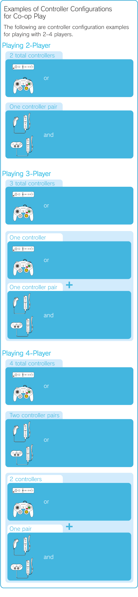
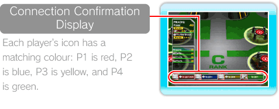
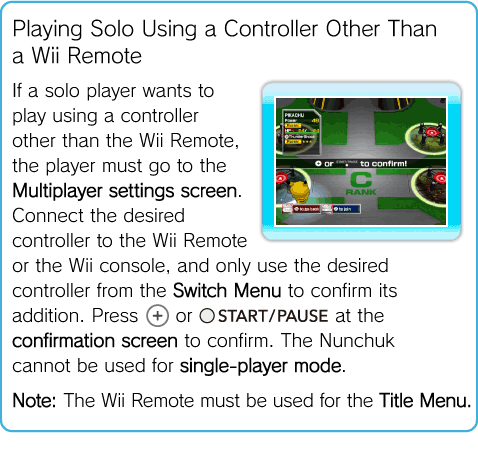

18 |
Facilities for Co-op Play |
 |
|
If you enter the MULTIPLAYER facility in the Terminal, or select MULTIPLAYER from the Pause Menu (see p. 16: Pause Menu), you can participate in Co-op Play. Co-op Play settings are the same.
Multiplayer
However, there must be at least one Pokémon and one controller per player to play co-operatively. Prepare for co-operative play by befriending Pokémon in the Stages, or by saving Pokémon to a Wii Remote using Wii REMOTE POKéMON.
Regarding Co-op Play: If you only have one Wii Remote, you can connect a Nunchuk or a Classic Controller to it, and play in 2-player mode, with one player on the Wii Remote and one player using the Nunchuk or Classic Controller.
 Beginning Co-op Play Follow these instructions to set up Co-op Play.
Approach the MULTIPLAYER facility or select MULTIPLAYER from the Pause Menu, then press
Register a Wii Remote, connect Nunchuk or a Classic Controller to the Wii Remote, or plug a Nintendo GameCube Controller into the Wii console, and a controller confirmation screen will appear. Press Note: If you connect a Nunchuk or Classic Controller to the Wii Remote, a connection confirmation display will appear. 
The Switch Menu will appear for each player. Please select which Pokémon you’d like to control. Pokémon that have been selected by other players are not available for selection.
After all players have selected a Pokémon, a confirmation message appears. Players not using a Nunchuk controller should confirm Co-op Play Settings by pressing
Once the Co-op Play setup is finished, each player’s Pokémon will appear in the Terminal. Each Pokémon will be identified by the player’s number in the matching colour as above.
Quitting Co-op Play
When you would like to switch back to single-player mode from Co-op Play, or if a player would like to drop out of Co-op Play, the players who wish to continue playing must select their Pokémon either from the MULTIPLAYER facility or from the MULTIPLAYER option in the Pause Menu. Players who would like to quit Co-op Play must press the Cancel button (see p. 7: How to Use the Controller) at the MULTIPLAYER Switch Menu. The Switch Menu will close. Players who wish to continue must select a Pokémon and press

Wii Remote Pokémon
Using this facility, you can save your Pokémon to your Wii Remote to use on a friend’s Wii console for Co-op Play. You can also give your friend Pokémon by sending the Pokémon on your Wii Remote to your friend’s Wii console. Pokémon that have a Power restriction on them due to the Wonder Key cannot be sent or received. Up to 12 Pokémon can be sent to the Wii Remote. If there is any other data saved to the Wii Remote (except MiiTM characters), it will be overwritten. Only Pokémon from Pokémon Rumble can be sent to and received from the Wii Remote. Caution: Sent Pokémon will disappear from the Wii Remote and the Wii console.
Sending Pokémon to the Wii Remote or Wii Console
When sending a Pokémon to the Wii Remote from the Wii console, select YES from the Wii REMOTE POKéMON Facility and press When sending Pokémon from the Wii Remote to the Wii console, select the Pokémon on the Wii Remote (Pokémon marked with a |
 and select YES.
and select YES. on the Nunchuk,
on the Nunchuk,  on the Classic Controller, or on the GameCube Controller to confirm the controller’s addition.
on the Classic Controller, or on the GameCube Controller to confirm the controller’s addition. or
or  to confirm and send the Pokémon to the Wii Remote.
to confirm and send the Pokémon to the Wii Remote. |
 |
 |